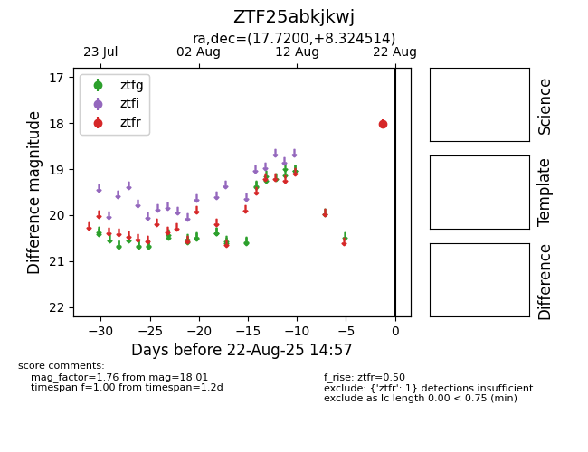

Target ZTF25abkjkwj at 2025-08-22 15:41, see:
FINK: fink-portal.org/ZTF25abkjkwj
Lasair: lasair-ztf.lsst.ac.uk/objects/ZTF25abkjkwj
ALeRCE: alerce.online/object/ZTF25abkjkwj
alt names
ZTF25abkjkwj (ztf,alerce)
coordinates:
equatorial (ra, dec) = (17.7200,+8.32451)
galactic (l, b) = (131.1792,-54.23561)
photometry
last ztfr=18.01
1 ztfr detections
